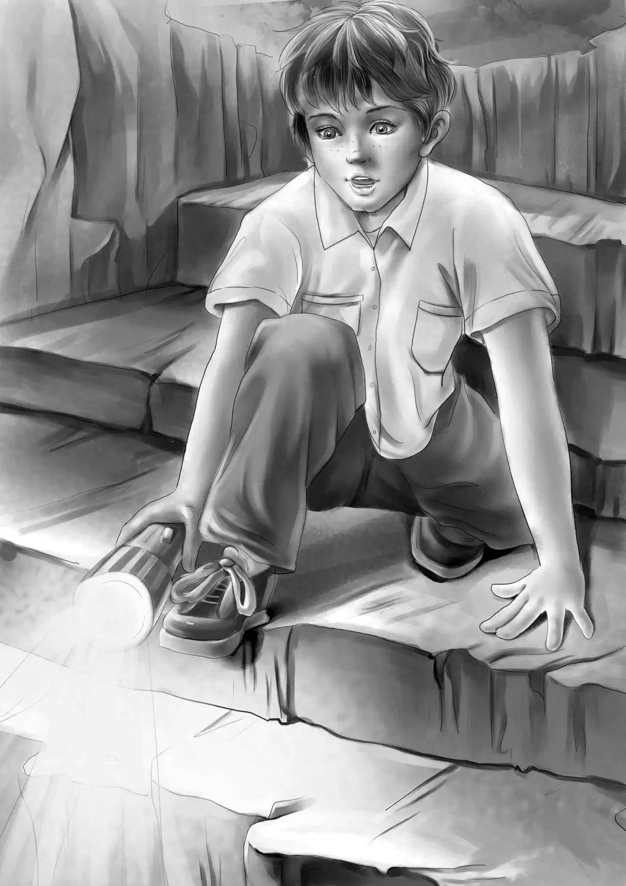

Benny was the first to speak. He said,"Well,this shows two things. Somebody's living here. And his hiding place can't be very far away."
"That's right,Benny," said Henry."Nobody could move all these things very far and then move them right back again."
"I say we'd better look for a hole in this cabin," said Benny."Maybe there's a cellar." He began to flash his light on the floor. Henry did the same. They found nothing.
"This is a funny floor,anyway," said Violet."Just dirt."
Sam said,"I'd take up that bed and look under it."
"Yes," said Henry."Sorry,Watch. You'll have to get off the bed."
Benny pushed him off gently.Watch shook himself and sat down.
The children moved the blanket carefully. They moved the thick bed of hay under it.
"Now,look!" said Jessie."Do you see what I see? That dirt has been moved!"
"That's right,Miss Jessie," said Sam."And not very long ago either. I wish we had a shovel."
"We don't need a shovel," said Henry."We need a shingle. And I know exactly where I can find a shingle!"
Henry went over to the shelf and came back with a shingle. "I saw it under the cans the first day," he said. He knelt down and pushed the shingle into the soft dirt. He worked and worked to find a hole or a crack.
"Let me try," said Benny."I love to dig." He knelt down and began to dig away the dirt.
"Certainly that dirt has been moved," said Violet."See how soft it is."
Then Benny found the crack.
"I've got it!" he shouted."It's heavy! I hope I don't break the shingle!"
"Oh,I hope not!" cried Jessie."Let Henry help you,Benny."
Henry took the shingle and lifted. And up came a cover.
"A wood cover!"shouted Benny."I bet there's a cellar under this woodshed!"
Perhaps it was not a cellar,but there was surely a big hole under the cover. Some of the dirt fell in. Benny flashed his light down the hole.
"Stairs!" he cried. "I'm going right down!"
His foot was on the top step.
"Oh,no,you're not,"said Sam.He shook his head."I couldn't let you. What would your Aunt Jane say if you got into trouble?"
"What trouble could I get into,Sam? There are only a few stairs."
"Who knows?"said Sam."Might be somebody down there."
"Oh,no,Sam!" said Benny."Watch would be right down there by now. And he would bark. And look at him!"
Watch was lying down chewing some hay.He was not interested in the hole.
"I'll go down myself," said Sam. "I'd like to see what's down there."
"You're too tall," said Benny.
"Well,I can bend over," said Sam."I am going first,that's sure."
"Take the biggest light,Sam," said Henry.
Sam took the big light and put his foot on the first stair. The stair did not break. Sam moved slowly. He sat down on a stair and flashed the light ahead.
The Aldens held their breath.
"Well,what do you know!" he called. "It looks like a tunnel!"
"A tunnel?" called Henry. "Can you crawl through it?"
"Yes,but I'm not going to," said Sam. "Hello,what's this?"
"Well,what is it?" called Henry.
"I don't know. It's something made of tin. I'll bring it up."
He passed up a very queer looking thing. Jessie took it and turned it over in her hands. "This is an old candlestick," she said. "It looks very,very old."
"Maybe somebody had to have a candle," called Sam."It's as dark as a pocket down here. It's not a bit wet,though."
"That's because it's on a hill," said Henry.
"Can't I come down now,Sam?" asked Benny."You see how quiet Watch is."
"Well,come on," said Sam."There's plenty of room."
"Let's all go down," cried Benny. But Watch did not like this. He saw Benny go down out of sight. Then when Henry started,he got up and began to bark.

"All right. All right!" said Jessie."You go down yourself, Mr. Watch." She pushed him gently down the stairs."You're a bother,though."
"No," said Sam."Watch is no bother. He's a help."
"Why do you think Watch is a help,Sam?" asked Benny.
"A dog knows," said Sam."He would bark his head off if there was any danger. A dog can smell danger."
At last everyone had come down the stairs.They had two flashlights.
"It's spooky down here," Jessie said,looking around her and shivering a bit.
"There's your tunnel," said Sam.
Watch ran in,but he soon turned around and came back.
"Maybe it isn't a tunnel,Sam. Maybe it's just a cave," said Henry.
"Maybe," said Sam.
"Here's a lot of junk," said Benny. He kicked a box with his foot."Ow!" he said. "That box is made of iron!"
"Take it," said Henry."We can open it later."
"You know what I think?"said Benny."I think we'd better get out of here. Suppose somebody put that cover on,we'd be in a fix!"
"Right!"said Henry."We ought to leave somebody up in the cabin to watch out."
Without another word,they all went up the stairs. They put the cover on and stamped on the soft dirt. They put the bed back.
And then they went home to Aunt Jane with a very old candlestick and a very heavy iron box.